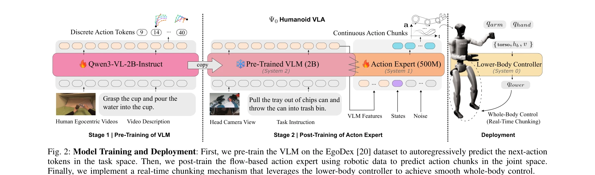

저자: Songlin Wei, Hongyi Jing, Boqian Li, Zhenyu Zhao, Jiageng Mao, Zhenhao Ni, Sicheng He, Jie Liu, Xiawei Liu, Kaidi Kang, Sheng Zang, Weiduo Yuan, Marco Pavone, Di Huang, Yue Wang | 날짜: 2026-03-12 | DOI: 10.48550/arXiv.2603.12263

Fig. 2: Model Training and Deployment: First, we pre-train the VLM on the EgoDex [20] dataset to autoregressively predic
Ψ0는 인간의 egocentric 동영상으로 VLM을 사전학습한 후, 실제 humanoid 로봇 데이터로 flow-based action expert를 후학습하는 2단계 훈련 패러다임을 제안하여 humanoid loco-manipulation을 효율적으로 학습하는 오픈 foundation model이다.
Fig. 2: Model Training and Deployment: First, we pre-train the VLM on the EgoDex [20] dataset to autoregressively predic
Fig. 2: Model Training and Deployment: First, we pre-train the VLM on the EgoDex [20] dataset to autoregressively predic
총평: Ψ0는 humanoid loco-manipulation의 효율적 학습을 위한 실용적이고 확장 가능한 접근법을 제시하며, high-quality egocentric 데이터의 가치를 입증함으로써 로봇 학습의 data scaling 전략에 중요한 인사이트를 제공한다. 오픈소스 공개 약속과 함께 커뮤니티에 의미 있는 기여가 될 수 있다.